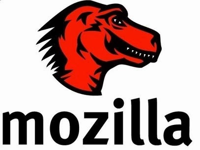

Mozilla era el apodo del navegador Netscape dentro de la misma empresa Netscape. En enero de 1998 Netscape anunció que liberaba el código fuente de su navegador y el proyecto de continuar el desarrollo de ese código recibió el nombre de Mozilla. Tras unos comienzos titubeantes en los que hubo que desechar gran parte del código, a partir de 1999 se empezaron a publicar numerosas versiones (el lema era "release early, release often", es decir "publica pronto, publica a menudo") de la suite Mozilla, que incluía tanto el navegador como el cliente de correo electrónico, un programa de chat o un editor. Desde el primer momento, el objetivo era implementar fielmente las recomendaciones del W3C. En junio de 2002 se publicó por fin Mozilla 1.0. Durante esos años, la financiación del proyecto provenía de AOL, que utilizaba Mozilla como base para las versiones de Netscape que siguieron publicándose durante unos años. Pero en mayo de 2003 AOL alcanzó un acuerdo con Microsoft para poner fin a las demandas por abuso de posición dominante. Microsoft pagó a AOL 750 millones de dólares y, a cambio, AOL pasó a utilizar Internet Explorer en vez de Netscape. AOL anunció entonces que dejaría de financiar el desarrollo de Mozilla. Para poder continuar el desarrollo de Mozilla, se creó en 2004 la Mozilla Foundation, fundación sin ánimo de lucro, que recibe la mayor parte de sus ingresos de Google. De 2002 a 2004 todavía se siguieron publicando numerosas versiones de Mozilla, pero se decidió separar (seguramente por influencia de Google, entre otros factores) los componentes de Mozilla y publicarlos como programas separados (el navegador Firefox, el cliente de correo electrónico Firebird, etc). Mozilla 1.7, la última versión de Mozilla, se publicó en junio de 2004 y Firefox 1.0, la primera versión de Firefox, se publicó en noviembre de 2004. En 2005 el desarrollo de Mozilla se dio por terminado.
